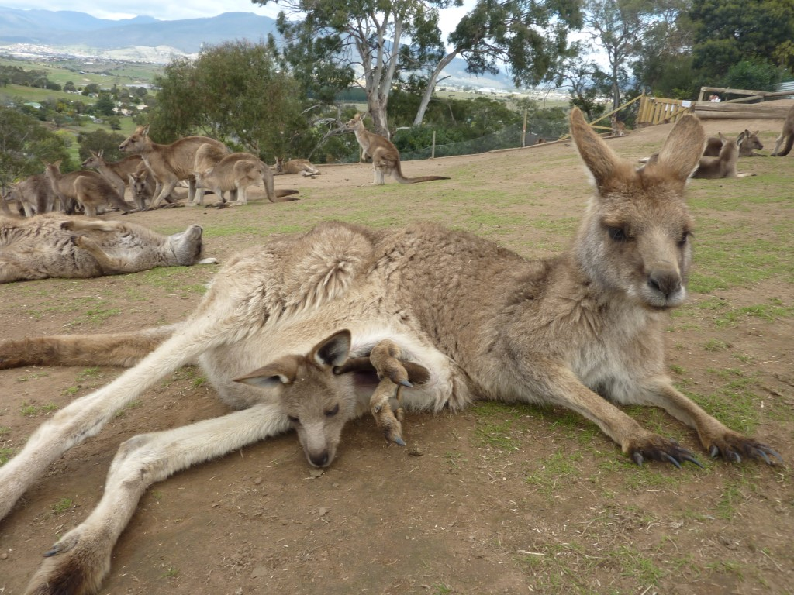

Maria Island, a nature reserve which used to be a penitentiary. Accommodation was the old prison cabins, and in place of any kind of bedding we decided to bring boxed wine (goon) to warm us. The locals got wind of our plan and sorted out sleeping bags for us!
Maria Island
Little beach trip in St.Marys

Wine Glass Bay!
Opportune photo moment in a park, Hobart
Hobart Botanical Gardens

The beautiful Bo. Our adopted orphan lamb
He was so goddamn adorable
Bonorong Wildlife Sanctuary, near Hobart
Argh, so cute!
Cygnet